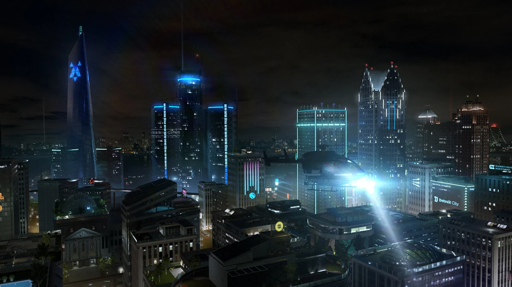
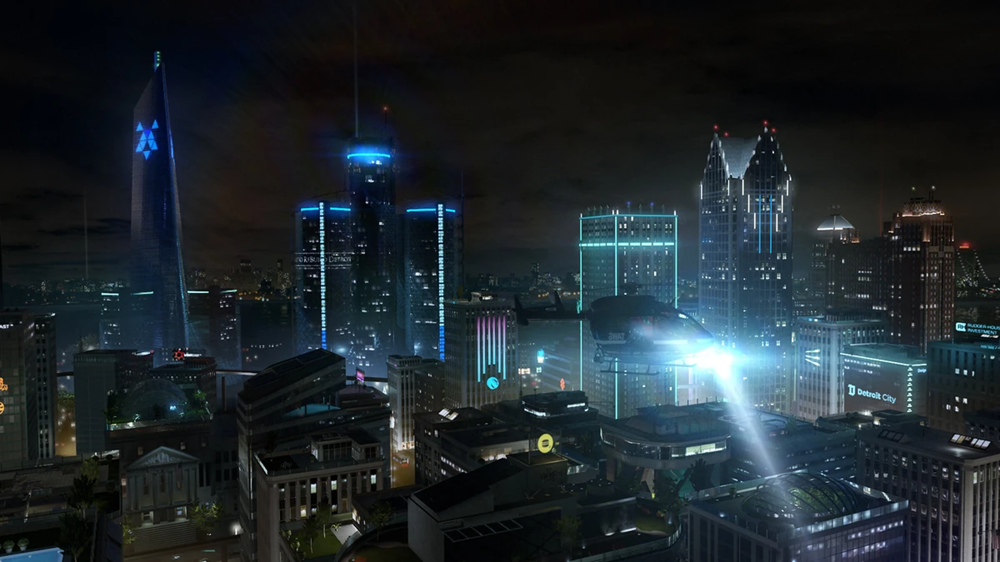

Кінематографічна графіка
Detroit: Become Human вражає візуально. Деталізовані моделі персонажів, реалістична міміка та жести завдяки технології motion capture створюють відчуття, що дивишся справжній фільм.
Атмосфера Детройта 2038 року
Місто подане як живий організм — від розкішних будинків до занедбаних районів і заводів. Кожна локація відображає соціальний поділ між людьми та андроїдами.
Унікальний геймдизайн
Геймплей побудований навколо рішень. Гравець досліджує світ, збирає докази, веде діалоги та бере участь у напружених QTE-сценах. Особливістю є дерево виборів, яке показує всі гілки після завершення місії.
Захопливий сюжет
Історія розгортається навколо трьох андроїдів — Кари, Коннора та Маркуса. Їхні долі переплітаються, а сюжет розкриває складні теми: свобода, людяність, права «нової раси».
Вибори та наслідки
Кожне рішення має значення: кого врятувати, на чий бік стати, чи боротися мирно чи силою. Від твоїх дій залежить не тільки доля героїв, а й майбутнє всього Детройта. У грі — десятки кінцівок, і жодне проходження не буде однаковим.
ALSO AVAILABLE: